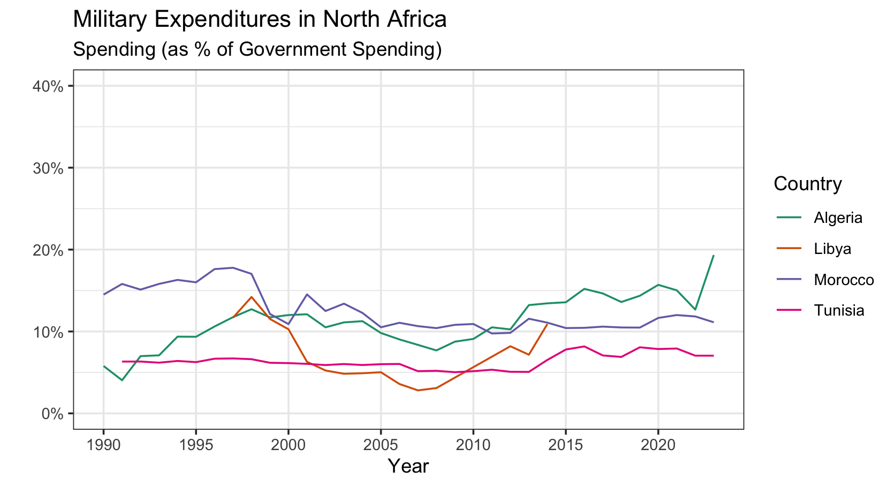

# load packages
library(readxl)
library(tidyverse)PA 4: Military Spending
Tidy Data with dplyr and tidyr
Today you will be tidying messy data to explore the relationship between countries of the world and military spending.
Download data – SPIRI-Milex-data-1949-2024.xlsx
Data Description
We will be using data from the Stockholm International Peace Research Institute (SIPRI). The SIPRI Military Expenditure Database is an open source data set containing time series on the military spending of countries from 1949–2023. The database is updated annually, which may include updates to data from previous years.
Military expenditure is presented in many ways:
- in local currency and in US $ (both from 2022 and current);
- in terms of financial years and calendar years;
- as a share of GDP and per capita.
The availability of data varies considerably by country, but we note that data is available from at least the late 1950s for a majority of countries that were independent at the time. Estimates for regional military expenditure have been extended backwards depending on availability of data, but no estimates for total world military expenditure are available before 1988 due to the lack of data from the Soviet Union.
SIPRI military expenditure data is based on open sources only.
Data Import
First, you should notice that there are ten different sheets included in the dataset. We are interested in the sheet labeled “Share of Govt. spending”, which contains information about the share of all government spending that is allocated to the military.
Next, you’ll notice that there are notes about the data in the first six rows. Ugh!
Rather than copying this one sheet into a new Excel file and deleting the first few rows, let’s learn something new about the read_xlsx() function!
Warning
As much as you can, always try to keep your raw data raw! Rather than changing anything about the raw data file by hand - figure out different ways to import the data to fit your needs.
Data Import with
read_xlsx()
The read_xlsx() function has several useful arguments:
sheet: specify the name of the sheet that you want to use. The name must be passed in as a string (in quotations)!skip: specify the number of rows you want to skip before reading in the data.
1. Modify the code below (potentially including the file path) to read the military expenditures data into your workspace.
military <- read_xlsx("SIPRI-Milex-data-1949-2024.xlsx",
sheet = ,
skip = )Error: `path` does not exist: 'SIPRI-Milex-data-1949-2024.xlsx'
Warning
If you have the Excel file open on your computer while trying to import the data, you may get an error. If you do, close the Excel file and try running your code again.
Data Cleaning
You will notice that there are a couple of columns that don’t include spending data or are all missing (Notes and Reporting year). There is also an extra row that doesn’t include information on a country.
2. In one pipeline, drop those columns and that row. Save this dataset as a new object named military_clean.
# code for Q2In addition to NAs, missing values were coded in two other ways.
3. Find these two methods and write code to replace these values with NAs. Save these changes into an updated version of military_clean.
Tip
The information in the top 6 rows of the excel sheet will help you answer this question.
Helpful functions: mutate(), across() – you will need two of these, na_if()
Note: When referring to one of the year variable names that start with a number must put tick marks (above the tab key) around the name. Starting the name of a variable with a number is not commonly read as a variable name. E.g., to read the 1988 column through the 2019 column, use `1988.0`:`2019.0`. However, you don’t have to refer to the variable names to complete this task - it might be most efficient to specify columns you don’t want to mutate.
# code for Q3Because characters were used to indicate missing values, all of the columns 1988 through 2023 were read in as characters.
4. Change these columns to a numeric data type. Save these changes into an updated version of military_clean.
# code for Q4If you give the Country column a look, you’ll see there are names of continents and regions included. These names are only included to make it simpler to find countries, as they contain no data.
Luckily for us, these region names were also stored in the “Regional totals” sheet. We can use the Region column of this dataset to filter out the names we don’t want.
Run the code below to read in the “Regional totals” dat, making any necessary modifications to the file path.
cont_region <- read_xlsx("SIPRI-Milex-data-1949-2024.xlsx",
sheet = "Regional totals",
skip = 13) |>
filter(Region != "World total (including Iraq)",
Region != "World total (excluding Iraq)") |>
select(Region)Error: `path` does not exist: 'SIPRI-Milex-data-1949-2024.xlsx'A clever way to filter out observations you don’t want is with a join. A tool tailored just for this scenario is the anti_join() function. This function will return all of the rows of one dataset without a match in another dataset.
5. Use the anti_join() function to filter out the Country values we don’t want in the military_clean data. The by argument needs to be filled with the name(s) of the variables that the two datasets should be joined with.
Tip
Join by different variables in dataX and dataY: join_by(a == b) will match dataX$a to dataY$b.
# code for Q5
Canvas Q1 & Q2
6. How many countries have no spending information in this dataset? What are some of these countries (a list to choose from will be given in Canvas)?
Tip
Useful functions: filter(), if_all(), is.na(). You will also want to double check that any observations that are missing information aren’t just a region that we missed excluding!
# code for Q6Data Organization
We are interested in comparing the military expenditures of countries in Eastern Europe. We want to look at trends over time and to visualize variability in expenditures within and between countries, like the following two plots:


Warning
Unfortunately, if we want a point in the graph representing the spending for every country and year (without some SERIOUS headache), we need every year to be a single column!
To tidy a dataset like this, we need to pivot the columns of years from wide format to long format. To do this process we need three arguments:
cols: The set of columns that represent values, not variables. In these data, those are all the columns from1988.0to2023.0.names_to: The name of the variable that should be created to move these columns into. In these data, this could be"year".values_to: The name of the variable that should be created to move these column’s values into. In these data, this could be labeled"spending".
These form the three required arguments for the pivot_longer() function.
7. Pivot the cleaned up military data set to a “longer” orientation. Save this new “long” version as a new variable called military_long.
Caution
Do not overwrite your cleaned up dataset!
# code for Q78. Notice that when you pivoted the data, the year variable is a character data type. Convert this to numeric.
summary(military_long)Error: object 'military_long' not found# code for Q8Data Visualization
Now that we’ve transformed the data, let’s create a plot to explore military spending across Eastern European countries.
9. Create side-by-side boxplots to explore the military spending between Eastern European countries.
Tip
Make sure you change the plot title and axis labels to accurately represent the plot.
You might also want to change the x-axis limits and the color of your plots.
Place the Country variable on an axis that makes it easier to read the labels!
# I have provided a list of Eastern European countries (in these data) for you to use.
eastern_europe <- c("Armenia", "Azerbaijan", "Belarus",
"Georgia", "Moldova", "Russia", "Ukraine")
# code for Q910. Create a line plot to explore the military spending of Eastern European countries over time.
# code for Q10
Canvas Q3 + Q4
11. Looking at the plots you created above, which Eastern European country had the smallest variability in military expenditures over time? Consider a measure of variability that is robust to outliers (like IQR).
12. Looking at the plots you created above, you can see that for one Eastern European country, their miliary spending (%) over doubled and then returned to previous levels by around 2015. What is the name of the war that would explain this trend?.